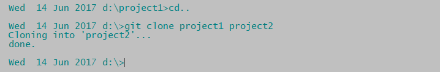
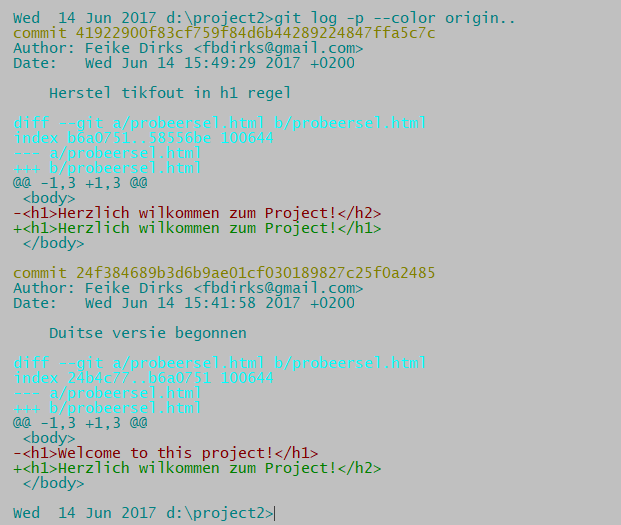

Een project clonen
Je hebt een nieuw project gestart in de project1 directory, een file toegevoegd en veranderd. Maar de situatie komt ook vaak voor dat je begint met een bestaande codebase (bijvoorbeeld van je collega, of van een eerder project). Als dat eerdere project onder git versie controle staat kun je het eenvoudig 'klonen' (=een kopie maken die ook weer onder git versie controle staat).
Dat gaat zo. Laten we een directory omhoog gaan en project project1 clonen naar project2 en daarin verder werken:
cd ..
git clone project1 project2
cd test2

Ga met cd project2 naar de map project2. Kijk met dir of probeersel.html hier ook voorkomt. Bovendien, als je git log doet zie je dat de hele commit geschiedenis ook hier bestaat. Git clone kopieert niet alleen de bestanden, maar ook de complete repository en commit geschiedenis. De kloon is kompleet. Vlak na het commando git clone zijn de directories project1 en project2 identiek.
We gaan de zaak compliceren en wat veranderingen aan brengen. We zitten in test2. Wijzig het programma bijvoorbeeld zo:
De Duitse versie dus, met een foutje er in (let op de <h2>)..
Als we git status intikken zien we dat probeersel.html veranderd is. Dus moeten we 'adden' en 'committen':
git add probeersel.php
git commit -m "Duitse versie begonnen"
Probeer nu git log om te kijken naar de complete commit geschiedenis. Maar dit commando:
git log origin..laat alleen maar de commits zien na de cloning. Hier kun je de opties -p en --color aan toevoegen om de diffs ook goed te bekijken:
git log -p --color origin..We gaan de code van probeersel.html weer corrigeren:
En daarna weer adden en committen:
git add probeersel.html
git commit -m "Bugfix: tikfout in h1 regel hersteld"Hier na zie je met:
git log -p --color origin..je commitgeschiedenis sinds de kloning groeien.

Een directory toevoegen aan een repository
Als je in een git directory een directory maakt en er wat bestanden in plaatst kun je ook een directory 'adden'. Stel je voor dat je in test1 een directory aanmaakt 'testplan' en daar wat bestanden in plaatst. Als je dan dit doet:
git add testplan
git commit -m "testplan map toegevoegd"zul je merken dat alle bestanden in de testmap directory nu gewoon meedoen in de repository (en bijgehouden worden!)
Veranderingen 'trekken' (pull) van een remote repository
Het begint met het klonen van een remote repository, dus een repository die niet op jouw computer staat maar bijvoorbeeld op het internet. Je moet dan een internet URL beschikbaar hebben. Stel je voor dat je weet dat op https://github.com/fbdirks/gitCourse.git een git repository staat. Geef dan dit commando:
git clone https://github.com/fbdirks/gitCourse.gitEr zal nu een map gitCourse aangemaakt zijn en als je die opent zie je alle bijhorende bestanden.
Dit klonen hoeft maar één keer. Tegelijk met alle bestanden is ook informatie opgeslagen waarmee je later nieuwe versies van deze repository kan ophalen. Hiervoor is maar een heel kort commando nodig:
git pullBehalve het ophalen van nieuwe versies van een remote project zul je aan dat project ook willen bijdragen. Daarvoor heb je behalve je eigen versies en veranderingen in het project ook toestemming nodig om jouw aanpassingen te mogen uploaden naar het remote project. Vaak gaat dat via een usernaam en wachtwoord combinatie. Als je die toestemming hebt is ook weer een buitengewoon kort commando voldoende om jouw wijzigingen naar het project te uploaden:
git pushIs het plaatje hiermee compleet? Nee. Er zijn nog een paar belangrijke zaken te bespreken:
- Hoe kun je verschillende ontwikkellijnen opzetten en hoe combineer je die uiteindelijk in de hoofdlijn?
- Wat doe je als verschillende teamleaden aan dezelfde bestanden hebben gewerkt en hun wijzigingen niet zonder meer samen te voegen zijn?